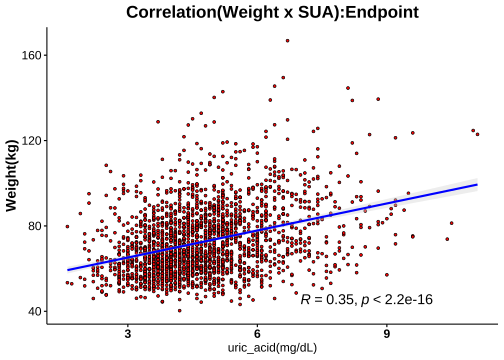
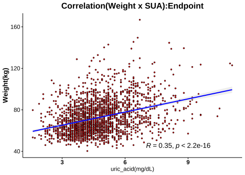

1.8 分層分析-3: 尿酸(Serum Uric Acid)
1.8.1 相關分析(Correlation Analysis)
 



1.8.2 Cutoff-1 (♂7.6/♀6.6)
| No change | Decrease | Increase | Normal>High | High>Normal | High>High | Sum | |
|---|---|---|---|---|---|---|---|
| female | 128 | 782 | 174 | 38 | 128 | 39 | 1289 |
| male | 28 | 125 | 27 | 9 | 81 | 23 | 293 |
| Sum | 156 | 907 | 201 | 47 | 209 | 62 | 1582 |
|
Cutoffs: Male: 7.6 (mg/dL) Female: 6.6(mg/dL) |


成效(Effectiveness)


成效(%)-Blood

| No change | Decrease | Increase | Normal>High | High>Normal | High>High | No change | Decrease | Increase | Normal>High | High>Normal | High>High | |
|---|---|---|---|---|---|---|---|---|---|---|---|---|
| 體重(T0) | 71.26 ± 1.26 | 72.09 ± 0.47 | 70.7 ± 1.02 | 75.33 ± 2.28 | 82.82 ± 1.26 | 86.75 ± 3.21 | 95.19 ± 4.01 | 93.37 ± 1.34 | 89.92 ± 3.55 | 93.8 ± 7.37 | 98.82 ± 1.94 | 102.47 ± 4.41 |
| BMI(T0) | 27.92 ± 0.46 | 27.92 ± 0.17 | 27.35 ± 0.36 | 28.97 ± 0.66 | 31.76 ± 0.46 | 33.54 ± 1.09 | 31.94 ± 1.4 | 30.95 ± 0.4 | 29.39 ± 0.96 | 30.65 ± 2.23 | 32.79 ± 0.53 | 33.65 ± 1.38 |
| 體脂重(T0) | 28.86 ± 0.86 | 28.83 ± 0.33 | 27.9 ± 0.7 | 32.24 ± 1.48 | 36.33 ± 0.91 | 39.57 ± 2.19 | 33.42 ± 2.9 | 30.77 ± 0.85 | 29.27 ± 2.37 | 31.89 ± 4.75 | 35.36 ± 1.36 | 37.25 ± 3.34 |
| 體脂率(T0) | 39.71 ± 0.54 | 39.21 ± 0.22 | 38.63 ± 0.49 | 42.18 ± 0.78 | 43.19 ± 0.51 | 44.62 ± 0.99 | 33.78 ± 1.35 | 32.33 ± 0.51 | 31.54 ± 1.41 | 32.93 ± 2.23 | 34.94 ± 0.7 | 35.03 ± 1.73 |
| 骨骼肌質量指數(T0) | 6.72 ± 0.07 | 6.85 ± 0.03 | 6.75 ± 0.06 | 6.86 ± 0.11 | 7.38 ± 0.07 | 7.52 ± 0.16 | 8.77 ± 0.19 | 8.84 ± 0.07 | 8.53 ± 0.17 | 8.69 ± 0.37 | 8.92 ± 0.08 | 9.04 ± 0.17 |
| 骨骼肌率(T0) | 32.73 ± 0.29 | 33.1 ± 0.12 | 33.28 ± 0.26 | 31.49 ± 0.42 | 31.17 ± 0.28 | 30.43 ± 0.53 | 37.23 ± 0.74 | 38.26 ± 0.3 | 38.44 ± 0.82 | 37.61 ± 1.22 | 36.82 ± 0.4 | 36.78 ± 0.97 |
| 內臟脂肪面積(T0) | 139.79 ± 4.27 | 141.93 ± 1.62 | 139.27 ± 3.63 | 160.84 ± 7.05 | 176.96 ± 3.7 | 189.83 ± 7.77 | 140.44 ± 9.43 | 133.18 ± 4.29 | 129.32 ± 11.55 | 122.99 ± 12.35 | 153.05 ± 6 | 141.49 ± 12.55 |
| 腰圍(T0) | 91.79 ± 1.02 | 92.15 ± 0.41 | 90.64 ± 0.88 | 96.16 ± 2.06 | 101.65 ± 0.97 | 104.72 ± 2.26 | 105.95 ± 2.94 | 104.75 ± 1.1 | 100.64 ± 2.92 | 104.14 ± 5.4 | 110.9 ± 1.7 | 111.66 ± 3.62 |
| 除脂體重(T0) | 42.39 ± 0.53 | 43.26 ± 0.19 | 42.8 ± 0.44 | 43.09 ± 0.95 | 46.5 ± 0.5 | 47.18 ± 1.2 | 61.77 ± 1.34 | 62.6 ± 0.66 | 60.64 ± 1.62 | 61.91 ± 3.31 | 63.46 ± 0.81 | 65.21 ± 1.66 |
| 基礎代謝率(T0) | 1285.79 ± 11.39 | 1304.4 ± 4.16 | 1294.56 ± 9.6 | 1300.92 ± 20.48 | 1374.29 ± 10.75 | 1389.08 ± 26.02 | 1704.36 ± 29.03 | 1722.22 ± 14.34 | 1679.85 ± 35.02 | 1707.56 ± 71.41 | 1740.7 ± 17.47 | 1778.65 ± 35.79 |
| 糖化血色素(T0) | 5.52 ± 0.05 | 5.49 ± 0.01 | 5.52 ± 0.06 | 5.49 ± 0.07 | 5.76 ± 0.06 | 6 ± 0.23 | 5.94 ± 0.17 | 5.59 ± 0.04 | 6.17 ± 0.23 | 5.71 ± 0.2 | 5.62 ± 0.04 | 5.92 ± 0.18 |
| 空腹血糖(T0) | 87.28 ± 2.35 | 85.57 ± 0.37 | 86.22 ± 1.52 | 86.53 ± 1.82 | 88.13 ± 1.26 | 95.28 ± 6.11 | 93.68 ± 4.48 | 88.92 ± 1.14 | 100.04 ± 6.63 | 89.11 ± 5.19 | 85.88 ± 1.02 | 92.78 ± 4.05 |
| 空腹胰島素(T0) | 11.44 ± 0.77 | 11.65 ± 0.3 | 10.5 ± 0.77 | 14.95 ± 1.74 | 17.51 ± 1.04 | 21.36 ± 3.35 | 16.07 ± 2.15 | 16.04 ± 0.97 | 18.48 ± 2.35 | 17.37 ± 4.63 | 18.53 ± 1.39 | 18.29 ± 2.27 |
| 胰島素阻抗值(T0) | 2.45 ± 0.18 | 2.58 ± 0.09 | 2.43 ± 0.31 | 3.24 ± 0.38 | 3.91 ± 0.25 | 5.05 ± 0.84 | 3.75 ± 0.51 | 3.55 ± 0.22 | 4.83 ± 0.84 | 4.21 ± 1.49 | 4.01 ± 0.34 | 4.29 ± 0.59 |
| β細胞功能(T0) | 199.42 ± 13.91 | 201.24 ± 9.51 | 174 ± 21.35 | 249.43 ± 30.93 | 307.19 ± 28.95 | 322.43 ± 44.5 | 226.49 ± 35.3 | 252.13 ± 20.18 | 238.52 ± 23.65 | 245.33 ± 46.14 | 342.07 ± 38.88 | 289.56 ± 37.77 |
| 三酸甘油脂(T0) | 101.06 ± 4.25 | 107.04 ± 2 | 93.91 ± 3.57 | 99.29 ± 7.22 | 148.01 ± 6.49 | 161.59 ± 25.42 | 136.5 ± 13.88 | 147.92 ± 8.21 | 152.41 ± 15.76 | 105.22 ± 10.37 | 175.94 ± 11.97 | 168.91 ± 20.67 |
| 總膽固醇(T0) | 199.09 ± 3.22 | 196.15 ± 1.3 | 197.45 ± 2.89 | 198.16 ± 6.99 | 203.98 ± 3.84 | 196.85 ± 5.63 | 182.46 ± 6.14 | 196.92 ± 3.25 | 184.19 ± 7.29 | 200 ± 10.04 | 203.9 ± 4.17 | 209.74 ± 10.46 |
| 高密度脂蛋白(T0) | 57.93 ± 1.26 | 56.99 ± 0.45 | 59.69 ± 1.06 | 54.78 ± 2.34 | 51.31 ± 0.98 | 47.7 ± 1.77 | 44.16 ± 1.5 | 46.59 ± 0.79 | 45.79 ± 1.73 | 47.4 ± 2.07 | 44.34 ± 1.3 | 45.47 ± 2.87 |
| 低密度脂蛋白(T0) | 122.98 ± 2.75 | 122.22 ± 1.12 | 120.31 ± 2.4 | 129.18 ± 6.17 | 131.9 ± 3.41 | 125.92 ± 5.54 | 122.82 ± 5.49 | 128.08 ± 2.73 | 119 ± 6.5 | 139 ± 10.12 | 134.58 ± 3.75 | 139 ± 9.3 |
| 尿酸(T0) | 4.75 ± 0.08 | 5.14 ± 0.03 | 4.33 ± 0.06 | 5.57 ± 0.11 | 7.38 ± 0.08 | 7.73 ± 0.16 | 5.74 ± 0.21 | 6.27 ± 0.08 | 5.5 ± 0.19 | 6.4 ± 0.39 | 8.53 ± 0.1 | 9.14 ± 0.27 |
| 澱粉脢(T0) | 43.77 ± 1.07 | 45.24 ± 0.53 | 48.57 ± 1.74 | 45.87 ± 2.34 | 41.62 ± 1.28 | 36.64 ± 1.34 | 41.43 ± 2.53 | 44.1 ± 1.57 | 45.67 ± 2.49 | 43.44 ± 4.63 | 38.59 ± 1.29 | 40.7 ± 3.01 |
| 解脂脢(T0) | 23.53 ± 0.94 | 23.88 ± 0.48 | 25.17 ± 1.42 | 24.97 ± 2.38 | 25.34 ± 1.34 | 27.9 ± 2.32 | 23.11 ± 1.9 | 26.99 ± 2.35 | 28.96 ± 3.2 | 23 ± 3.64 | 23.24 ± 1.34 | 26.52 ± 3.6 |
| 體重(T1) | 66.57 ± 1.21 | 67.69 ± 0.45 | 65.66 ± 0.97 | 68.62 ± 2.09 | 77.39 ± 1.22 | 80.68 ± 2.96 | 89.18 ± 3.95 | 86.82 ± 1.27 | 84.21 ± 3.49 | 84.5 ± 6.51 | 92.26 ± 1.93 | 95.2 ± 4.53 |
| BMI(T1) | 25.9 ± 0.43 | 26.21 ± 0.16 | 25.38 ± 0.34 | 26.39 ± 0.6 | 29.68 ± 0.45 | 31.2 ± 1.02 | 29.94 ± 1.39 | 28.78 ± 0.37 | 27.52 ± 0.95 | 27.62 ± 1.96 | 30.63 ± 0.52 | 31.26 ± 1.43 |
| 體脂重(T1) | 25.4 ± 0.83 | 25.85 ± 0.32 | 24.51 ± 0.66 | 28.03 ± 1.42 | 32.69 ± 0.9 | 35.57 ± 2.06 | 29.04 ± 2.87 | 26.19 ± 0.81 | 25.29 ± 2.36 | 24.68 ± 4.12 | 30.92 ± 1.34 | 31.39 ± 3.4 |
| 體脂率(T1) | 37.21 ± 0.58 | 37.33 ± 0.24 | 36.46 ± 0.51 | 40.13 ± 0.94 | 41.43 ± 0.57 | 42.97 ± 1.05 | 31.02 ± 1.53 | 29.47 ± 0.56 | 28.79 ± 1.57 | 27.97 ± 2.44 | 32.52 ± 0.76 | 31.25 ± 1.96 |
| 骨骼肌質量指數(T1) | 6.48 ± 0.07 | 6.6 ± 0.03 | 6.5 ± 0.06 | 6.45 ± 0.1 | 7.06 ± 0.07 | 7.2 ± 0.15 | 8.56 ± 0.2 | 8.54 ± 0.07 | 8.28 ± 0.16 | 8.36 ± 0.33 | 8.61 ± 0.08 | 8.83 ± 0.18 |
| 骨骼肌率(T1) | 33.97 ± 0.31 | 33.99 ± 0.13 | 34.28 ± 0.27 | 32.37 ± 0.5 | 32.01 ± 0.3 | 31.2 ± 0.56 | 38.7 ± 0.84 | 39.75 ± 0.32 | 39.9 ± 0.91 | 40.32 ± 1.34 | 38.08 ± 0.43 | 38.75 ± 1.09 |
| 內臟脂肪面積(T1) | 122.48 ± 4.2 | 126.38 ± 1.64 | 120.33 ± 3.46 | 141.42 ± 7.06 | 160.91 ± 3.97 | 164.87 ± 8.34 | 119.29 ± 9.19 | 110.98 ± 4.03 | 112.3 ± 10.77 | 105.93 ± 17.74 | 133.42 ± 6.22 | 111.19 ± 12.3 |
| 腰圍(T1) | 87.39 ± 1.03 | 87.89 ± 0.4 | 85.56 ± 0.83 | 89.84 ± 1.96 | 96.89 ± 1.01 | 99.27 ± 2.23 | 99.39 ± 2.85 | 98.12 ± 1.09 | 95 ± 2.98 | 94.97 ± 5.04 | 104.84 ± 1.79 | 104.12 ± 3.92 |
| 除脂體重(T1) | 41.18 ± 0.5 | 41.84 ± 0.19 | 41.16 ± 0.43 | 40.59 ± 0.87 | 44.69 ± 0.48 | 45.12 ± 1.07 | 60.15 ± 1.35 | 60.63 ± 0.65 | 58.93 ± 1.52 | 59.82 ± 3.01 | 61.34 ± 0.82 | 63.81 ± 1.7 |
| 基礎代謝率(T1) | 1259.46 ± 10.71 | 1273.67 ± 4 | 1258.99 ± 9.35 | 1246.68 ± 18.8 | 1335.4 ± 10.29 | 1344.44 ± 23.12 | 1669.21 ± 29.08 | 1679.63 ± 13.98 | 1642.74 ± 32.9 | 1662 ± 64.95 | 1695.11 ± 17.8 | 1748.09 ± 36.82 |
| 糖化血色素(T1) | 5.26 ± 0.04 | 5.24 ± 0.01 | 5.19 ± 0.04 | 5.15 ± 0.05 | 5.39 ± 0.04 | 5.46 ± 0.11 | 5.48 ± 0.1 | 5.29 ± 0.03 | 5.49 ± 0.12 | 5.22 ± 0.12 | 5.33 ± 0.03 | 5.41 ± 0.08 |
| 空腹血糖(T1) | 77.97 ± 1.34 | 78.4 ± 0.28 | 73.28 ± 0.93 | 69.11 ± 1.25 | 80.59 ± 0.85 | 76.64 ± 2.11 | 80.14 ± 1.96 | 79.26 ± 0.69 | 80.63 ± 2.76 | 67.67 ± 2.89 | 78.67 ± 0.85 | 78.04 ± 2.5 |
| 空腹胰島素(T1) | 9.05 ± 0.7 | 9.4 ± 0.25 | 7.33 ± 0.49 | 8.75 ± 1.1 | 14.03 ± 0.78 | 15.51 ± 2.21 | 11.66 ± 1.7 | 11.58 ± 0.71 | 13.27 ± 3.11 | 5.86 ± 1.65 | 15.33 ± 1.52 | 13.15 ± 2.03 |
| 胰島素阻抗值(T1) | 1.8 ± 0.16 | 1.87 ± 0.05 | 1.4 ± 0.11 | 1.56 ± 0.21 | 2.86 ± 0.17 | 3.13 ± 0.48 | 2.35 ± 0.35 | 2.29 ± 0.15 | 2.95 ± 0.86 | 1.03 ± 0.33 | 3.1 ± 0.36 | 2.62 ± 0.44 |
| β細胞功能(T1) | 298.18 ± 39.32 | 251.43 ± 11.26 | 249.37 ± 43.55 | 649.78 ± 203.29 | 384.39 ± 47.38 | 509.31 ± 140.82 | 331.31 ± 90.12 | 306.48 ± 42.1 | 296.16 ± 40.69 | 847.18 ± 493.76 | 386.17 ± 41.11 | 410.71 ± 64.42 |
| 三酸甘油脂(T1) | 93.01 ± 3.5 | 90.24 ± 1.63 | 91.03 ± 2.26 | 103.87 ± 4.9 | 113.57 ± 4.38 | 117.13 ± 6.58 | 128.93 ± 16.25 | 115.17 ± 5.97 | 135.44 ± 9.62 | 115.44 ± 13.45 | 149.58 ± 12.85 | 134.78 ± 12.08 |
| 總膽固醇(T1) | 206.56 ± 4.11 | 197.68 ± 1.53 | 206.35 ± 3.81 | 203.42 ± 9.12 | 192.91 ± 3.37 | 182.87 ± 5.51 | 190.11 ± 10.91 | 193.58 ± 4.11 | 189.89 ± 9.7 | 212.44 ± 12.63 | 192.94 ± 4.48 | 209.57 ± 11.3 |
| 高密度脂蛋白(T1) | 52.32 ± 1.16 | 52.16 ± 0.41 | 51.78 ± 0.95 | 42.58 ± 1.65 | 47.42 ± 0.83 | 42.09 ± 1.77 | 40.96 ± 1.54 | 43.8 ± 0.8 | 41.49 ± 1.9 | 43.06 ± 4.33 | 42.23 ± 1.21 | 41.03 ± 2.42 |
| 低密度脂蛋白(T1) | 133.73 ± 3.41 | 127.26 ± 1.26 | 132.7 ± 3.04 | 138.92 ± 7.86 | 125.8 ± 3.06 | 120.62 ± 5.34 | 127.93 ± 8.28 | 128.52 ± 3.39 | 125.07 ± 8.93 | 147.22 ± 11.3 | 128.46 ± 3.94 | 143 ± 9.12 |
| 尿酸(T1) | 4.73 ± 0.08 | 4 ± 0.03 | 5.14 ± 0.06 | 7.41 ± 0.11 | 5.1 ± 0.08 | 7.31 ± 0.12 | 5.7 ± 0.21 | 4.79 ± 0.07 | 6.4 ± 0.18 | 9 ± 0.35 | 5.82 ± 0.13 | 8.64 ± 0.19 |
| 澱粉脢(T1) | 45.32 ± 1.21 | 47.88 ± 0.6 | 47.52 ± 1.33 | 43.84 ± 2.28 | 45.61 ± 1.42 | 40.44 ± 1.71 | 44.96 ± 3.72 | 45.95 ± 1.6 | 48.63 ± 3.38 | 42 ± 4.97 | 41.32 ± 1.3 | 43.39 ± 3.28 |
| 解脂脢(T1) | 34.98 ± 1.55 | 36.42 ± 0.99 | 34.43 ± 1.38 | 39.79 ± 3.87 | 39.16 ± 2.2 | 40.03 ± 2.93 | 38.46 ± 9.39 | 39.91 ± 3.02 | 38.31 ± 3.96 | 32.78 ± 5.35 | 33.91 ± 1.83 | 38.39 ± 5.2 |
| 年齡 | 39.61 ± 1.04 | 39.35 ± 0.37 | 39.02 ± 0.67 | 38.18 ± 1.72 | 40.73 ± 1.15 | 38.28 ± 1.66 | 41.29 ± 2.4 | 40.52 ± 0.96 | 41.78 ± 2.03 | 38.33 ± 2.9 | 36.81 ± 1.12 | 35.39 ± 2.17 |
| 飲食紀錄完成率(%) | 69.33 ± 2.59 | 63.38 ± 1.05 | 75.44 ± 1.89 | 76.27 ± 3.85 | 62.52 ± 2.58 | 78.64 ± 3.89 | 65.16 ± 6.01 | 63.39 ± 2.64 | 65.24 ± 6.26 | 76.22 ± 8.97 | 61.3 ± 3.51 | 64.72 ± 5.76 |
| 紀錄數量 | 181.55 ± 11.85 | 158.22 ± 4.29 | 210.5 ± 12.43 | 220.95 ± 30.29 | 148.85 ± 10 | 194.67 ± 17.46 | 137.64 ± 20.01 | 161.51 ± 12.58 | 178.81 ± 33.32 | 170.56 ± 46.42 | 147.35 ± 16.63 | 162.96 ± 35.3 |
| 上傳照片張數 | 156.63 ± 9 | 137.56 ± 3.67 | 174.82 ± 8.34 | 163.03 ± 13.46 | 131.78 ± 8.87 | 182.13 ± 18.02 | 139.25 ± 20.05 | 141.08 ± 10 | 189.81 ± 27.63 | 231.56 ± 61.16 | 134.42 ± 12.6 | 158.43 ± 33.68 |
| 碳水攝取率(E%) | 18.43 ± 0.61 | 20.13 ± 0.23 | 16.92 ± 0.42 | 15.68 ± 0.79 | 19.54 ± 0.56 | 16.07 ± 0.93 | 18.37 ± 1.74 | 19.45 ± 0.62 | 18.55 ± 1.36 | 14.47 ± 2.03 | 19.5 ± 0.82 | 14.88 ± 0.89 |
| 蛋白攝取率(E%) | 27.78 ± 0.23 | 27.13 ± 0.1 | 27.88 ± 0.19 | 28.3 ± 0.39 | 27.26 ± 0.24 | 28.69 ± 0.47 | 28.17 ± 0.65 | 27.5 ± 0.26 | 27.38 ± 0.52 | 29.16 ± 0.74 | 27.46 ± 0.35 | 28.63 ± 0.58 |
| 脂肪攝取率(E%) | 53.79 ± 0.46 | 52.73 ± 0.17 | 55.2 ± 0.33 | 56.02 ± 0.65 | 53.2 ± 0.41 | 55.25 ± 0.72 | 53.46 ± 1.22 | 53.05 ± 0.46 | 54.07 ± 0.97 | 56.37 ± 1.75 | 53.04 ± 0.59 | 56.49 ± 0.69 |
| 總攝取熱量(日) | 1001.43 ± 14.9 | 1000.75 ± 5.85 | 1008.48 ± 12.06 | 988.88 ± 22.18 | 1015.2 ± 15.65 | 1020.24 ± 25.38 | 1145.22 ± 41.13 | 1147.08 ± 20.97 | 1112.51 ± 35.47 | 1182.84 ± 94.85 | 1116.13 ± 25.84 | 1170.81 ± 34.77 |
| 綠燈率 | 85.87 ± 1.17 | 81.23 ± 0.55 | 86.07 ± 1.05 | 90.07 ± 1.45 | 83.13 ± 1.24 | 88.45 ± 2.21 | 81.5 ± 3.89 | 83.28 ± 1.25 | 85.37 ± 2.6 | 88.26 ± 2.11 | 81.06 ± 1.98 | 87.59 ± 2.43 |
| 黃燈率 | 12.5 ± 1.02 | 16.28 ± 0.49 | 12.46 ± 0.94 | 8.17 ± 1.14 | 13.77 ± 1.06 | 10.28 ± 2.01 | 16.54 ± 3.39 | 14.97 ± 1.1 | 13.65 ± 2.43 | 11.34 ± 2.19 | 16.05 ± 1.73 | 11.27 ± 2.24 |
| 紅燈率 | 1.64 ± 0.3 | 2.48 ± 0.18 | 1.47 ± 0.23 | 1.76 ± 0.58 | 3.1 ± 0.63 | 1.27 ± 0.37 | 1.96 ± 0.77 | 1.74 ± 0.35 | 0.97 ± 0.31 | 0.4 ± 0.38 | 2.88 ± 0.69 | 1.14 ± 0.53 |
| 水果(日) | 0.09 ± 0.01 | 0.08 ± 0 | 0.07 ± 0.01 | 0.05 ± 0.01 | 0.08 ± 0.01 | 0.04 ± 0.01 | 0.03 ± 0.01 | 0.05 ± 0.01 | 0.08 ± 0.04 | 0.13 ± 0.08 | 0.07 ± 0.02 | 0.03 ± 0.01 |
| 蔬菜(日) | 3.44 ± 0.1 | 3.24 ± 0.04 | 3.61 ± 0.08 | 3.66 ± 0.16 | 3.33 ± 0.11 | 3.76 ± 0.18 | 3.38 ± 0.23 | 3.31 ± 0.11 | 3.71 ± 0.26 | 4.35 ± 0.78 | 3.25 ± 0.13 | 3.76 ± 0.23 |
| 全穀雜糧(日) | 1.78 ± 0.1 | 2.13 ± 0.04 | 1.51 ± 0.07 | 1.27 ± 0.12 | 2.07 ± 0.11 | 1.39 ± 0.15 | 2.19 ± 0.29 | 2.56 ± 0.14 | 2.08 ± 0.26 | 1.2 ± 0.26 | 2.38 ± 0.16 | 1.63 ± 0.23 |
| 蛋豆魚肉(日) | 8.89 ± 0.17 | 8.53 ± 0.07 | 9.06 ± 0.14 | 9.05 ± 0.24 | 8.74 ± 0.16 | 9.52 ± 0.33 | 10.43 ± 0.56 | 9.99 ± 0.22 | 9.73 ± 0.45 | 11.27 ± 1.03 | 9.78 ± 0.31 | 10.87 ± 0.34 |
| 乳品(日) | 0.05 ± 0.01 | 0.08 ± 0 | 0.05 ± 0.01 | 0.03 ± 0.01 | 0.06 ± 0.01 | 0.03 ± 0.01 | 0.05 ± 0.02 | 0.05 ± 0.01 | 0.05 ± 0.02 | 0.05 ± 0.02 | 0.06 ± 0.01 | 0.04 ± 0.01 |
| 油脂(日) | 3.81 ± 0.1 | 3.88 ± 0.04 | 4 ± 0.07 | 3.85 ± 0.12 | 3.9 ± 0.09 | 3.88 ± 0.15 | 4.17 ± 0.22 | 4.31 ± 0.12 | 4.34 ± 0.2 | 4.29 ± 0.39 | 4.05 ± 0.12 | 4.29 ± 0.24 |
| ∆體重 | 4.69 ± 0.21 | 4.4 ± 0.08 | 5.04 ± 0.19 | 6.71 ± 0.42 | 5.44 ± 0.21 | 6.07 ± 0.45 | 6.01 ± 0.55 | 6.54 ± 0.26 | 5.7 ± 0.69 | 9.3 ± 1.06 | 6.56 ± 0.45 | 7.26 ± 0.64 |
| ∆BMI | 2.02 ± 0.18 | 1.7 ± 0.03 | 1.96 ± 0.08 | 2.58 ± 0.16 | 2.09 ± 0.08 | 2.34 ± 0.16 | 1.99 ± 0.18 | 2.17 ± 0.09 | 1.86 ± 0.23 | 3.04 ± 0.34 | 2.16 ± 0.13 | 2.39 ± 0.21 |
| ∆體脂重 | 3.47 ± 0.15 | 2.98 ± 0.06 | 3.39 ± 0.16 | 4.21 ± 0.28 | 3.63 ± 0.16 | 4 ± 0.3 | 4.39 ± 0.32 | 4.57 ± 0.21 | 3.99 ± 0.42 | 7.21 ± 0.71 | 4.43 ± 0.28 | 5.86 ± 0.51 |
| ∆體脂率 | 2.5 ± 0.2 | 1.88 ± 0.06 | 2.17 ± 0.16 | 2.05 ± 0.3 | 1.75 ± 0.15 | 1.64 ± 0.24 | 2.76 ± 0.3 | 2.86 ± 0.19 | 2.76 ± 0.33 | 4.97 ± 0.5 | 2.42 ± 0.21 | 3.78 ± 0.46 |
| ∆骨骼肌質量指數 | 0.24 ± 0.02 | 0.25 ± 0.01 | 0.26 ± 0.02 | 0.4 ± 0.04 | 0.31 ± 0.02 | 0.31 ± 0.04 | 0.21 ± 0.06 | 0.3 ± 0.02 | 0.25 ± 0.06 | 0.33 ± 0.06 | 0.31 ± 0.04 | 0.21 ± 0.06 |
| ∆骨骼肌重 | 0.74 ± 0.09 | 0.86 ± 0.03 | 1 ± 0.06 | 1.52 ± 0.16 | 1.07 ± 0.07 | 1.24 ± 0.15 | 0.99 ± 0.22 | 1.22 ± 0.1 | 1.05 ± 0.23 | 1.27 ± 0.31 | 1.29 ± 0.21 | 0.94 ± 0.25 |
| ∆內臟脂肪面積 | 16.81 ± 0.79 | 15.47 ± 0.35 | 17.98 ± 0.8 | 18.72 ± 1.66 | 16.12 ± 0.95 | 18.43 ± 1.62 | 21.21 ± 1.99 | 21.87 ± 1.12 | 17.12 ± 1.4 | 31.9 ± 3.03 | 21.22 ± 1.45 | 26.16 ± 2.57 |
| ∆腰圍 | 4.4 ± 0.26 | 4.27 ± 0.1 | 5.08 ± 0.22 | 6.32 ± 0.61 | 4.76 ± 0.27 | 5.44 ± 0.51 | 6.57 ± 0.74 | 6.62 ± 0.3 | 5.64 ± 0.66 | 9.18 ± 0.68 | 6.06 ± 0.44 | 7.54 ± 1.01 |
| ∆除脂體重 | 1.22 ± 0.16 | 1.42 ± 0.05 | 1.64 ± 0.11 | 2.5 ± 0.28 | 1.8 ± 0.12 | 2.07 ± 0.25 | 1.62 ± 0.37 | 1.97 ± 0.18 | 1.72 ± 0.38 | 2.09 ± 0.46 | 2.12 ± 0.34 | 1.4 ± 0.41 |
| ∆基礎代謝率 | -26.33 ± 3.37 | -30.73 ± 1.08 | -35.57 ± 2.39 | -54.24 ± 5.94 | -38.89 ± 2.55 | -44.64 ± 5.5 | -35.14 ± 8.02 | -42.59 ± 3.89 | -37.11 ± 8.13 | -45.56 ± 9.98 | -45.59 ± 7.23 | -30.57 ± 8.86 |
| ∆糖化血色素 | 0.26 ± 0.03 | 0.25 ± 0.01 | 0.34 ± 0.04 | 0.33 ± 0.05 | 0.37 ± 0.03 | 0.54 ± 0.14 | 0.46 ± 0.1 | 0.3 ± 0.02 | 0.68 ± 0.14 | 0.49 ± 0.18 | 0.29 ± 0.02 | 0.51 ± 0.15 |
| ∆空腹血糖 | 9.31 ± 1.61 | 7.17 ± 0.36 | 12.94 ± 1.22 | 17.42 ± 2.16 | 7.54 ± 1.15 | 18.64 ± 6.05 | 13.54 ± 3.85 | 9.66 ± 1.14 | 19.41 ± 6.32 | 21.44 ± 4.25 | 7.21 ± 0.9 | 14.74 ± 3.58 |
| ∆空腹胰島素 | 2.38 ± 0.61 | 2.25 ± 0.27 | 3.17 ± 0.52 | 6.33 ± 1.41 | 3.48 ± 0.86 | 5.85 ± 3.08 | 4.41 ± 1.49 | 4.46 ± 0.9 | 4.67 ± 3.11 | 11.51 ± 3.42 | 3.21 ± 1.17 | 5.14 ± 2.32 |
| ∆胰島素阻抗值 | 0.66 ± 0.14 | 0.71 ± 0.08 | 1.03 ± 0.24 | 1.7 ± 0.31 | 1.06 ± 0.22 | 1.92 ± 0.79 | 1.4 ± 0.35 | 1.25 ± 0.21 | 1.89 ± 1.05 | 3.18 ± 1.2 | 0.91 ± 0.26 | 1.67 ± 0.58 |
| ∆β細胞功能 | -98.46 ± 39.33 | -52.61 ± 13.81 | -73.22 ± 47.63 | -396.71 ± 194.5 | -81.01 ± 42.07 | -186.88 ± 138.72 | -100.16 ± 74.28 | -63.83 ± 40.94 | -57.64 ± 41.89 | -601.84 ± 499.61 | -44.1 ± 43.27 | -121.16 ± 54.22 |
| ∆三酸甘油脂 | 8.05 ± 4.11 | 16.8 ± 1.74 | 2.89 ± 2.84 | -4.58 ± 7.36 | 34.44 ± 5.74 | 44.46 ± 23.68 | 7.57 ± 12.14 | 32.75 ± 6.43 | 16.96 ± 15.14 | -10.22 ± 14.9 | 26.36 ± 9.74 | 34.13 ± 14.23 |
| ∆總膽固醇 | -7.47 ± 2.8 | -1.53 ± 1.17 | -8.9 ± 3.06 | -5.26 ± 4.72 | 11.08 ± 2.95 | 13.97 ± 3.38 | -7.64 ± 8.1 | 3.34 ± 2.87 | -5.7 ± 6.52 | -12.44 ± 10.32 | 10.96 ± 3.59 | 0.17 ± 8.1 |
| ∆高密度脂蛋白 | 5.62 ± 0.75 | 4.83 ± 0.3 | 7.91 ± 0.65 | 12.2 ± 1.5 | 3.89 ± 0.65 | 5.61 ± 1.16 | 3.2 ± 1.27 | 2.79 ± 0.58 | 4.3 ± 1.85 | 4.34 ± 3.23 | 2.11 ± 0.8 | 4.43 ± 1.8 |
| ∆低密度脂蛋白 | -10.75 ± 2.31 | -5.04 ± 1 | -12.39 ± 2.56 | -9.74 ± 4.39 | 6.1 ± 2.61 | 5.31 ± 3.03 | -5.11 ± 6.4 | -0.44 ± 2.45 | -6.07 ± 5.85 | -8.22 ± 8.41 | 6.12 ± 3.06 | -4 ± 7.6 |
| ∆尿酸 | -0.01 ± 0.01 | -1.14 ± 0.02 | 0.82 ± 0.04 | 1.84 ± 0.17 | -2.27 ± 0.1 | -0.42 ± 0.21 | -0.03 ± 0.03 | -1.48 ± 0.07 | 0.9 ± 0.12 | 2.6 ± 0.64 | -2.7 ± 0.16 | -0.5 ± 0.36 |
| ∆澱粉脢 | 1.55 ± 0.81 | 2.64 ± 0.39 | -1.05 ± 1.1 | -2.03 ± 1.47 | 3.98 ± 0.91 | 3.79 ± 1.06 | 3.54 ± 3.38 | 1.85 ± 1.27 | 2.96 ± 2.49 | -1.44 ± 1.99 | 2.73 ± 0.9 | 2.7 ± 1.32 |
| ∆解脂脢 | 11.45 ± 1.31 | 12.58 ± 0.78 | 9.4 ± 1.5 | 14.82 ± 3.49 | 13.94 ± 1.65 | 12.13 ± 2.49 | 15.36 ± 9.43 | 13.1 ± 2.96 | 8.54 ± 4.82 | 9.78 ± 5.36 | 10.24 ± 1.36 | 11.87 ± 3.15 |
| ∆體重(%) | 6.58 ± 0.28 | 6.1 ± 0.1 | 7.11 ± 0.25 | 8.85 ± 0.47 | 6.63 ± 0.24 | 6.97 ± 0.39 | 6.41 ± 0.59 | 7 ± 0.27 | 6.37 ± 0.78 | 9.88 ± 0.61 | 6.72 ± 0.49 | 7.42 ± 0.74 |
| ∆BMI(%) | 7.05 ± 0.46 | 6.1 ± 0.1 | 7.13 ± 0.25 | 8.85 ± 0.47 | 6.62 ± 0.24 | 6.97 ± 0.39 | 6.38 ± 0.58 | 6.99 ± 0.27 | 6.37 ± 0.78 | 9.86 ± 0.62 | 6.62 ± 0.4 | 7.42 ± 0.73 |
| ∆體脂重(%) | 12.68 ± 0.58 | 10.71 ± 0.22 | 12.21 ± 0.6 | 13.52 ± 0.91 | 10.55 ± 0.49 | 10.5 ± 0.74 | 14.96 ± 1.47 | 15.47 ± 0.74 | 15.3 ± 1.67 | 24.19 ± 2.02 | 13.47 ± 0.85 | 18.36 ± 1.98 |
| ∆體脂率(%) | 6.55 ± 0.51 | 4.97 ± 0.18 | 5.59 ± 0.48 | 5.13 ± 0.8 | 4.27 ± 0.37 | 3.82 ± 0.59 | 9.17 ± 1.31 | 9.21 ± 0.64 | 9.67 ± 1.28 | 15.83 ± 2.03 | 7.28 ± 0.7 | 11.94 ± 1.65 |
| ∆骨骼肌質量指數(%) | 3.51 ± 0.32 | 3.53 ± 0.11 | 3.78 ± 0.26 | 5.8 ± 0.6 | 4.19 ± 0.25 | 4.11 ± 0.49 | 2.49 ± 0.6 | 3.37 ± 0.25 | 2.8 ± 0.68 | 3.7 ± 0.61 | 3.49 ± 0.44 | 2.35 ± 0.62 |
| ∆骨骼肌重(%) | 3.01 ± 0.43 | 3.6 ± 0.12 | 4.29 ± 0.26 | 6.37 ± 0.64 | 4.17 ± 0.26 | 4.63 ± 0.49 | 2.82 ± 0.64 | 3.4 ± 0.28 | 2.94 ± 0.67 | 3.43 ± 0.79 | 3.52 ± 0.59 | 2.61 ± 0.7 |
| ∆內臟脂肪面積(%) | 13.36 ± 0.71 | 11.82 ± 0.28 | 13.67 ± 0.69 | 12.39 ± 1.2 | 9.98 ± 0.63 | 10.86 ± 1.16 | 16.85 ± 1.84 | 17.29 ± 0.85 | 15.13 ± 1.59 | 26.85 ± 2.39 | 15.15 ± 0.98 | 21.2 ± 2.18 |
| ∆腰圍(%) | 4.83 ± 0.27 | 4.6 ± 0.1 | 5.54 ± 0.24 | 6.51 ± 0.59 | 4.74 ± 0.27 | 5.21 ± 0.48 | 6.21 ± 0.67 | 6.34 ± 0.29 | 5.71 ± 0.66 | 8.85 ± 0.56 | 5.59 ± 0.42 | 6.99 ± 0.94 |
| ∆除脂體重(%) | 2.68 ± 0.42 | 3.22 ± 0.11 | 3.81 ± 0.25 | 5.69 ± 0.6 | 3.83 ± 0.24 | 4.23 ± 0.46 | 2.6 ± 0.61 | 3.11 ± 0.28 | 2.69 ± 0.64 | 3.21 ± 0.66 | 3.3 ± 0.53 | 2.17 ± 0.65 |
| ∆基礎代謝率(%) | -1.95 ± 0.28 | -2.32 ± 0.08 | -2.72 ± 0.18 | -4.1 ± 0.43 | -2.8 ± 0.18 | -3.12 ± 0.34 | -2.04 ± 0.47 | -2.44 ± 0.22 | -2.12 ± 0.49 | -2.56 ± 0.53 | -2.59 ± 0.42 | -1.73 ± 0.51 |
| ∆糖化血色素(%) | 4.52 ± 0.43 | 4.29 ± 0.15 | 5.51 ± 0.42 | 5.83 ± 0.73 | 6.06 ± 0.41 | 7.42 ± 1.2 | 7.04 ± 1.12 | 5.19 ± 0.37 | 9.79 ± 1.56 | 8.01 ± 2.71 | 5.17 ± 0.32 | 7.52 ± 1.8 |
| ∆空腹血糖(%) | 8.98 ± 1.05 | 7.64 ± 0.37 | 13.66 ± 0.94 | 19.17 ± 1.94 | 7.16 ± 1.15 | 14.54 ± 2.62 | 12.33 ± 2.47 | 9.65 ± 1.09 | 14.66 ± 3.82 | 23.06 ± 3.62 | 7.89 ± 1.01 | 13.73 ± 3.2 |
| ∆空腹胰島素(%) | 5.84 ± 7.16 | 3.37 ± 2.31 | 16.78 ± 4.9 | 24.11 ± 10.26 | -0.01 ± 7.7 | 13.37 ± 11.77 | 21.13 ± 8.02 | 10.78 ± 6.74 | 23.1 ± 9.84 | 64.69 ± 6.6 | 9.24 ± 6.44 | 18.8 ± 9.65 |
| ∆胰島素阻抗值(%) | 7.84 ± 7.86 | 8.2 ± 2.41 | 26.14 ± 4.85 | 35.96 ± 9.35 | 2.43 ± 8.95 | 19.9 ± 12.27 | 28.85 ± 8.28 | 15.24 ± 7.64 | 30.26 ± 10.67 | 71.84 ± 5.53 | 15.21 ± 6.23 | 27.91 ± 9.73 |
| ∆β細胞功能(%) | -85.8 ± 29.25 | -51.86 ± 6.5 | -65.82 ± 34.69 | -142.15 ± 101.26 | -47.25 ± 14.57 | -44.04 ± 58.91 | -48.62 ± 20.32 | -41.5 ± 21.35 | -54.83 ± 21.38 | -272.15 ± 238.67 | -40.96 ± 13.14 | -91.26 ± 41.28 |
| ∆三酸甘油脂(%) | -4.8 ± 4.54 | 7.07 ± 1.27 | -8.78 ± 2.98 | -21.73 ± 10.01 | 12.91 ± 3.43 | 12.64 ± 4.86 | -2.35 ± 8.07 | 13.93 ± 2.88 | -0.55 ± 6.84 | -15.03 ± 13.91 | 9.53 ± 4.13 | 6.08 ± 7.82 |
| ∆總膽固醇(%) | -4.11 ± 1.43 | -1.51 ± 0.59 | -5.17 ± 1.54 | -2.36 ± 2.39 | 4.04 ± 1.39 | 6.75 ± 1.71 | -3.52 ± 3.99 | 1.42 ± 1.43 | -3.35 ± 3.62 | -6.76 ± 5.5 | 4.56 ± 1.67 | -1.03 ± 4.27 |
| ∆高密度脂蛋白(%) | 8.74 ± 1.22 | 7.44 ± 0.5 | 12.36 ± 1.01 | 20.6 ± 2.28 | 6.11 ± 1.3 | 10.99 ± 2.22 | 6.43 ± 2.62 | 5.25 ± 1.19 | 8.09 ± 4.18 | 9.95 ± 6.83 | 3.75 ± 1.62 | 7.43 ± 3.8 |
| ∆低密度脂蛋白(%) | -9.84 ± 1.91 | -6.17 ± 0.87 | -12.35 ± 2.14 | -7.82 ± 3.37 | 1.85 ± 2.05 | 3.13 ± 2.56 | -4.03 ± 4.84 | -1.43 ± 2.11 | -4.7 ± 5.39 | -7.19 ± 6.53 | 2.98 ± 2.26 | -6.86 ± 6.91 |
| ∆尿酸(%) | -0.34 ± 0.26 | -21.89 ± 0.38 | 19.91 ± 1.09 | 35.54 ± 4.06 | -30.36 ± 1.15 | -3.96 ± 2.51 | -0.52 ± 0.48 | -23.2 ± 0.97 | 17.79 ± 2.99 | 47.92 ± 16.43 | -31.06 ± 1.71 | -3.5 ± 3.8 |
| ∆澱粉脢(%) | 4.8 ± 1.9 | 7.25 ± 0.75 | 0.46 ± 1.32 | -2.76 ± 2.82 | 11.57 ± 2.01 | 11.12 ± 2.92 | 11.38 ± 7.19 | 7.02 ± 2.27 | 7.67 ± 6.14 | -3.65 ± 4.83 | 9.75 ± 2.59 | 7.97 ± 3.1 |
| ∆解脂脢(%) | 62.1 ± 7.22 | 64.67 ± 3.04 | 57.56 ± 6.34 | 78.49 ± 16.82 | 70.47 ± 6.26 | 76.71 ± 21.44 | 77.04 ± 40.71 | 80.42 ± 9.96 | 55.42 ± 22.93 | 56.68 ± 24.34 | 55.07 ± 6.28 | 63.54 ± 13.41 |
|
Significance: |
1.8.3 Cutoff-2 (5.5)
| No change | Decrease | Increase | Normal>High | High>Normal | High>High | Sum | |
|---|---|---|---|---|---|---|---|
| female | 97 | 491 | 109 | 65 | 350 | 177 | 1289 |
| male | 10 | 17 | 3 | 11 | 107 | 145 | 293 |
| Sum | 107 | 508 | 112 | 76 | 457 | 322 | 1582 |
| Cutoffs: 5.5(mg/dL) |


成效(Effectiveness)


成效(%)-Blood

| No change | Decrease | Increase | Normal>High | High>Normal | High>High | No change | Decrease | Increase | Normal>High | High>Normal | High>High | |
|---|---|---|---|---|---|---|---|---|---|---|---|---|
| 體重(T0) | 68.76 ± 1.4 | 70.36 ± 0.54 | 68.8 ± 1.29 | 72.52 ± 1.28 | 76.67 ± 0.77 | 81.26 ± 1.26 | 88.75 ± 4.92 | 88.69 ± 2.96 | 77.33 ± 0.86 | 83.39 ± 1.92 | 93.77 ± 1.56 | 99.25 ± 1.57 |
| BMI(T0) | 26.9 ± 0.5 | 27.26 ± 0.2 | 26.36 ± 0.42 | 28.28 ± 0.45 | 29.62 ± 0.28 | 31.42 ± 0.44 | 29.01 ± 1.33 | 29.74 ± 1.18 | 27.02 ± 1.82 | 27.31 ± 0.66 | 31.17 ± 0.46 | 32.76 ± 0.46 |
| 體脂重(T0) | 27.06 ± 0.97 | 27.45 ± 0.39 | 25.97 ± 0.87 | 30.42 ± 0.89 | 32.29 ± 0.55 | 35.59 ± 0.85 | 27.74 ± 3.13 | 27.51 ± 2.41 | 25.13 ± 6.08 | 24.21 ± 1.68 | 31.3 ± 1.02 | 35.47 ± 1.09 |
| 體脂率(T0) | 38.55 ± 0.61 | 38.3 ± 0.28 | 36.9 ± 0.62 | 41.56 ± 0.64 | 41.3 ± 0.32 | 43.01 ± 0.44 | 30.41 ± 2.2 | 30.34 ± 1.83 | 32.33 ± 7.43 | 28.79 ± 1.48 | 32.62 ± 0.58 | 34.81 ± 0.53 |
| 骨骼肌質量指數(T0) | 6.6 ± 0.08 | 6.78 ± 0.03 | 6.7 ± 0.08 | 6.72 ± 0.07 | 7.04 ± 0.04 | 7.26 ± 0.07 | 8.44 ± 0.27 | 8.72 ± 0.18 | 7.73 ± 0.47 | 8.35 ± 0.16 | 8.84 ± 0.08 | 8.94 ± 0.07 |
| 骨骼肌率(T0) | 33.3 ± 0.32 | 33.55 ± 0.15 | 34.2 ± 0.33 | 31.68 ± 0.35 | 32.06 ± 0.17 | 31.21 ± 0.24 | 39.05 ± 1.27 | 39.31 ± 1.08 | 37.24 ± 4.24 | 40.03 ± 0.97 | 38.09 ± 0.33 | 36.85 ± 0.3 |
| 內臟脂肪面積(T0) | 126.47 ± 4.5 | 136.34 ± 2.02 | 126.28 ± 4.36 | 155.23 ± 4.8 | 156.9 ± 2.46 | 175.38 ± 3.46 | 123.15 ± 15.12 | 114.55 ± 9.69 | 118.47 ± 33.8 | 101.56 ± 8.7 | 137 ± 5.02 | 148.88 ± 4.37 |
| 腰圍(T0) | 89.46 ± 1.1 | 90.47 ± 0.48 | 88.41 ± 1.09 | 93.73 ± 1.19 | 96.47 ± 0.64 | 100.24 ± 0.98 | 100.25 ± 3.97 | 100.21 ± 2.56 | 91.1 ± 3.98 | 95.18 ± 1.58 | 105.04 ± 1.28 | 110.35 ± 1.28 |
| 除脂體重(T0) | 41.7 ± 0.56 | 42.9 ± 0.23 | 42.83 ± 0.57 | 42.09 ± 0.61 | 44.38 ± 0.3 | 45.67 ± 0.52 | 61.01 ± 2.38 | 61.18 ± 1.57 | 52.2 ± 5.31 | 59.18 ± 1.02 | 62.47 ± 0.71 | 63.77 ± 0.65 |
| 基礎代謝率(T0) | 1270.79 ± 12.2 | 1296.77 ± 5.03 | 1295.1 ± 12.32 | 1279.35 ± 13.19 | 1328.63 ± 6.52 | 1356.31 ± 11.14 | 1687.9 ± 51.4 | 1691.47 ± 33.95 | 1497.67 ± 114.32 | 1648.27 ± 22 | 1719.53 ± 15.3 | 1747.46 ± 14.13 |
| 糖化血色素(T0) | 5.49 ± 0.06 | 5.46 ± 0.02 | 5.49 ± 0.07 | 5.48 ± 0.07 | 5.59 ± 0.02 | 5.72 ± 0.07 | 6.19 ± 0.41 | 5.82 ± 0.16 | 5.8 ± 0.21 | 5.62 ± 0.12 | 5.54 ± 0.04 | 5.81 ± 0.06 |
| 空腹血糖(T0) | 87.53 ± 3.06 | 85.33 ± 0.47 | 85.23 ± 1.76 | 87.11 ± 1.96 | 86.51 ± 0.61 | 89.05 ± 1.72 | 100 ± 12.35 | 94.82 ± 3.44 | 84.33 ± 1.76 | 84.82 ± 2.2 | 87.64 ± 1.22 | 90.72 ± 1.57 |
| 空腹胰島素(T0) | 9.92 ± 0.82 | 10.38 ± 0.33 | 9.8 ± 0.96 | 11.66 ± 0.85 | 14.28 ± 0.52 | 17.85 ± 1.12 | 12.64 ± 3.6 | 15.4 ± 2.38 | 13.1 ± 4.59 | 13.76 ± 1.87 | 15.13 ± 0.99 | 19.55 ± 1.05 |
| 胰島素阻抗值(T0) | 2.14 ± 0.2 | 2.34 ± 0.11 | 2.34 ± 0.46 | 2.55 ± 0.2 | 3.12 ± 0.13 | 4.01 ± 0.27 | 3.24 ± 0.9 | 3.75 ± 0.63 | 2.73 ± 1 | 2.86 ± 0.37 | 3.3 ± 0.22 | 4.5 ± 0.28 |
| β細胞功能(T0) | 179.03 ± 14.95 | 187.06 ± 8.35 | 183.12 ± 12.63 | 150.69 ± 49.98 | 237.4 ± 19.84 | 296.36 ± 18.4 | 175.89 ± 63.03 | 179.09 ± 24.94 | 216.8 ± 71.16 | 250.33 ± 40.05 | 257.26 ± 23.76 | 311.34 ± 23.2 |
| 三酸甘油脂(T0) | 94.84 ± 4.73 | 99.89 ± 2.4 | 89.84 ± 4.49 | 99.03 ± 5.48 | 123.56 ± 3.35 | 137.2 ± 7.02 | 94 ± 11.01 | 147 ± 27.96 | 122 ± 49.22 | 159.27 ± 30.37 | 149.21 ± 9.34 | 165.43 ± 7.6 |
| 總膽固醇(T0) | 198.04 ± 3.8 | 195.07 ± 1.62 | 197.02 ± 3.62 | 197.06 ± 4.89 | 199.25 ± 2.06 | 200.76 ± 2.96 | 162.8 ± 10.42 | 189.94 ± 7.48 | 168 ± 27.47 | 196.09 ± 10.16 | 200.98 ± 3.57 | 198.72 ± 3.25 |
| 高密度脂蛋白(T0) | 58.19 ± 1.44 | 58.3 ± 0.59 | 60.63 ± 1.43 | 58.1 ± 1.49 | 54.39 ± 0.62 | 51.89 ± 0.95 | 46.69 ± 2.15 | 48.02 ± 1.78 | 54.5 ± 7.19 | 44.83 ± 2.92 | 47.16 ± 1.04 | 43.96 ± 0.8 |
| 低密度脂蛋白(T0) | 121.57 ± 3.2 | 119.74 ± 1.38 | 119.82 ± 2.91 | 120.62 ± 4.24 | 127.47 ± 1.81 | 129.13 ± 2.62 | 105.9 ± 10.3 | 122.29 ± 5.88 | 104.67 ± 21.73 | 128 ± 10.39 | 132.29 ± 3.14 | 131.01 ± 2.8 |
| 尿酸(T0) | 4.42 ± 0.07 | 4.66 ± 0.03 | 3.93 ± 0.06 | 4.79 ± 0.06 | 6.23 ± 0.04 | 6.8 ± 0.08 | 4.49 ± 0.25 | 4.75 ± 0.17 | 3.83 ± 0.33 | 4.9 ± 0.2 | 6.87 ± 0.11 | 7.76 ± 0.11 |
| 澱粉脢(T0) | 43.99 ± 1.16 | 46.02 ± 0.68 | 48.28 ± 1.81 | 48.45 ± 3.58 | 43.49 ± 0.77 | 42.02 ± 0.98 | 43.2 ± 3.55 | 41.06 ± 3.91 | 45.67 ± 5.9 | 48.91 ± 4.92 | 43.09 ± 1.58 | 40.99 ± 1.18 |
| 解脂脢(T0) | 23.61 ± 1.1 | 24.21 ± 0.63 | 27.33 ± 2.09 | 23.83 ± 1.73 | 23.77 ± 0.73 | 24.42 ± 0.91 | 23.2 ± 4.63 | 20.35 ± 2.95 | 36 ± 24.58 | 24.36 ± 3.09 | 26.81 ± 2.58 | 25.4 ± 1.23 |
| 體重(T1) | 64.54 ± 1.36 | 66.06 ± 0.52 | 64.44 ± 1.24 | 66.25 ± 1.21 | 71.9 ± 0.74 | 75.41 ± 1.19 | 83.75 ± 4.59 | 82.84 ± 2.79 | 75.9 ± 2.87 | 76.97 ± 1.34 | 87.27 ± 1.48 | 92.34 ± 1.58 |
| BMI(T1) | 25.21 ± 0.49 | 25.6 ± 0.19 | 24.69 ± 0.4 | 25.81 ± 0.42 | 27.78 ± 0.27 | 29.05 ± 0.42 | 27.39 ± 1.28 | 27.77 ± 1.08 | 26.58 ± 2.41 | 25.21 ± 0.52 | 29 ± 0.44 | 30.5 ± 0.46 |
| 體脂重(T1) | 23.82 ± 0.94 | 24.58 ± 0.37 | 23.07 ± 0.82 | 26.24 ± 0.83 | 29.03 ± 0.53 | 31.68 ± 0.83 | 23.5 ± 2.95 | 23.77 ± 2.21 | 23.37 ± 7.08 | 20 ± 1.57 | 26.61 ± 0.98 | 30.63 ± 1.09 |
| 體脂率(T1) | 36 ± 0.67 | 36.42 ± 0.3 | 34.92 ± 0.63 | 39.17 ± 0.66 | 39.48 ± 0.35 | 41.01 ± 0.49 | 27.13 ± 2.43 | 28.02 ± 1.91 | 30.27 ± 8.02 | 25.75 ± 1.68 | 29.64 ± 0.64 | 32 ± 0.6 |
| 骨骼肌質量指數(T1) | 6.39 ± 0.08 | 6.54 ± 0.03 | 6.47 ± 0.08 | 6.39 ± 0.07 | 6.78 ± 0.04 | 6.95 ± 0.07 | 8.3 ± 0.24 | 8.43 ± 0.17 | 7.73 ± 0.32 | 8.05 ± 0.12 | 8.55 ± 0.08 | 8.65 ± 0.07 |
| 骨骼肌率(T1) | 34.57 ± 0.35 | 34.44 ± 0.16 | 35.12 ± 0.34 | 32.75 ± 0.36 | 32.92 ± 0.18 | 32.15 ± 0.26 | 40.87 ± 1.4 | 40.48 ± 1.13 | 38.3 ± 4.62 | 41.54 ± 1.1 | 39.67 ± 0.36 | 38.31 ± 0.33 |
| 內臟脂肪面積(T1) | 110.91 ± 4.45 | 120.13 ± 2 | 108.79 ± 4.17 | 133.84 ± 4.65 | 141.85 ± 2.52 | 155.52 ± 3.61 | 103.49 ± 14.26 | 101.52 ± 9.33 | 106.6 ± 34.12 | 89.5 ± 7.76 | 114.86 ± 4.87 | 126.63 ± 4.51 |
| 腰圍(T1) | 85.4 ± 1.12 | 86.31 ± 0.46 | 84.03 ± 1.02 | 87.31 ± 1.15 | 91.96 ± 0.65 | 94.97 ± 0.97 | 95.12 ± 4.24 | 94.34 ± 2.41 | 86.63 ± 3.91 | 88.2 ± 1.34 | 98.39 ± 1.3 | 103.74 ± 1.33 |
| 除脂體重(T1) | 40.72 ± 0.56 | 41.48 ± 0.22 | 41.37 ± 0.56 | 40.01 ± 0.59 | 42.87 ± 0.29 | 43.74 ± 0.47 | 60.25 ± 2.27 | 59.07 ± 1.61 | 52.53 ± 4.6 | 56.97 ± 0.88 | 60.66 ± 0.69 | 61.7 ± 0.66 |
| 基礎代謝率(T1) | 1249.56 ± 12.21 | 1265.87 ± 4.78 | 1263.66 ± 12.14 | 1234.12 ± 12.68 | 1296.03 ± 6.33 | 1314.69 ± 10.09 | 1671.5 ± 49.07 | 1645.94 ± 34.82 | 1504 ± 99.42 | 1600.73 ± 19.05 | 1680.28 ± 14.98 | 1702.81 ± 14.17 |
| 糖化血色素(T1) | 5.26 ± 0.04 | 5.23 ± 0.01 | 5.22 ± 0.04 | 5.11 ± 0.05 | 5.31 ± 0.02 | 5.3 ± 0.04 | 5.58 ± 0.21 | 5.44 ± 0.1 | 5.67 ± 0.03 | 5.22 ± 0.1 | 5.27 ± 0.04 | 5.37 ± 0.03 |
| 空腹血糖(T1) | 77.89 ± 1.66 | 78.01 ± 0.37 | 74.24 ± 1.18 | 70.62 ± 1.43 | 79.95 ± 0.43 | 75.99 ± 0.8 | 81.6 ± 3.77 | 81.59 ± 1.73 | 81.67 ± 5.84 | 72.27 ± 2.59 | 79.35 ± 0.73 | 78.43 ± 0.86 |
| 空腹胰島素(T1) | 8.57 ± 0.82 | 8.45 ± 0.26 | 7.23 ± 0.66 | 7.12 ± 0.65 | 11.72 ± 0.44 | 12.37 ± 0.77 | 8.02 ± 1.09 | 12.02 ± 2.07 | 16.52 ± 8.44 | 5.64 ± 0.9 | 11.35 ± 0.73 | 14.62 ± 1.11 |
| 胰島素阻抗值(T1) | 1.72 ± 0.19 | 1.67 ± 0.06 | 1.39 ± 0.15 | 1.29 ± 0.13 | 2.37 ± 0.1 | 2.43 ± 0.16 | 1.65 ± 0.24 | 2.36 ± 0.37 | 3.47 ± 1.87 | 1.06 ± 0.21 | 2.26 ± 0.16 | 2.98 ± 0.27 |
| β細胞功能(T1) | 273.34 ± 45.29 | 238.72 ± 14.5 | 295.2 ± 50.12 | 293.89 ± 108.08 | 265.62 ± 14.49 | 476.55 ± 59.82 | 166.87 ± 26 | 318.45 ± 97.27 | 342.07 ± 114.88 | 206.79 ± 41.63 | 304.79 ± 40.85 | 419.91 ± 46.26 |
| 三酸甘油脂(T1) | 89.94 ± 4.27 | 84.54 ± 1.43 | 88.37 ± 2.85 | 96.43 ± 3.81 | 99.84 ± 2.83 | 114.59 ± 4.21 | 83.1 ± 7.71 | 100.29 ± 12.62 | 105 ± 15.04 | 133.55 ± 13.51 | 115.79 ± 6.63 | 146.27 ± 8.09 |
| 總膽固醇(T1) | 209.2 ± 4.78 | 198.94 ± 1.95 | 208.41 ± 4.95 | 202.88 ± 6.35 | 193.75 ± 2.2 | 196.58 ± 3.17 | 156.3 ± 13.06 | 184.29 ± 10.8 | 193.67 ± 20.54 | 216 ± 15.97 | 196.11 ± 4.02 | 195.66 ± 4.1 |
| 高密度脂蛋白(T1) | 53.41 ± 1.36 | 53.73 ± 0.53 | 53.91 ± 1.29 | 47.35 ± 1.27 | 49.67 ± 0.55 | 44.78 ± 0.76 | 41.08 ± 1.06 | 45.68 ± 2.45 | 51.3 ± 3.35 | 43.83 ± 3.96 | 44.78 ± 0.95 | 40.55 ± 0.79 |
| 低密度脂蛋白(T1) | 135.31 ± 4.05 | 127.29 ± 1.63 | 133.17 ± 3.81 | 131.98 ± 5.34 | 125.82 ± 1.81 | 130.22 ± 2.8 | 101.9 ± 11.29 | 121.12 ± 8.93 | 129.33 ± 11.46 | 142.73 ± 16.48 | 131.1 ± 3.29 | 130.89 ± 3.45 |
| 尿酸(T1) | 4.4 ± 0.07 | 3.69 ± 0.03 | 4.62 ± 0.06 | 6.23 ± 0.09 | 4.47 ± 0.04 | 6.44 ± 0.06 | 4.46 ± 0.24 | 3.89 ± 0.17 | 4.2 ± 0.31 | 6.62 ± 0.41 | 4.56 ± 0.06 | 6.89 ± 0.1 |
| 澱粉脢(T1) | 46.03 ± 1.42 | 48.61 ± 0.74 | 48.37 ± 1.75 | 44.78 ± 2.02 | 46.67 ± 0.91 | 43.73 ± 1.06 | 45.7 ± 2.96 | 43.53 ± 4.32 | 38.33 ± 4.84 | 53.73 ± 6.17 | 45.86 ± 1.5 | 42.96 ± 1.4 |
| 解脂脢(T1) | 34.67 ± 1.81 | 37.65 ± 1.43 | 35.29 ± 1.74 | 35.32 ± 2.42 | 35.07 ± 1.11 | 38.24 ± 1.61 | 28.4 ± 4.45 | 32.88 ± 4.17 | 15 ± 3.27 | 40.55 ± 6.53 | 39.35 ± 3.05 | 37.64 ± 2.58 |
| 年齡 | 38.88 ± 1.15 | 39.82 ± 0.45 | 38.42 ± 0.86 | 40.77 ± 1.24 | 39.46 ± 0.59 | 38.55 ± 0.86 | 41.8 ± 2.82 | 46.82 ± 3.11 | 44.67 ± 17.52 | 43.09 ± 2.64 | 38.91 ± 0.96 | 37.97 ± 0.88 |
| 飲食紀錄完成率(%) | 67.02 ± 2.99 | 62.58 ± 1.33 | 73.63 ± 2.54 | 74.88 ± 3.23 | 62.99 ± 1.58 | 75.5 ± 1.86 | 77.72 ± 6.34 | 65.12 ± 7.01 | 34.5 ± 13.6 | 70.65 ± 9.1 | 63.58 ± 2.9 | 62.63 ± 2.58 |
| 紀錄數量 | 165.85 ± 12.39 | 156.76 ± 5.43 | 197.17 ± 13.08 | 231.74 ± 25.69 | 156.33 ± 6.24 | 193.84 ± 10.61 | 180.2 ± 41.76 | 137.47 ± 26.61 | 58.67 ± 29.58 | 195.55 ± 60.79 | 164.45 ± 12.32 | 151.91 ± 13.13 |
| 上傳照片張數 | 148.21 ± 10.12 | 135.92 ± 4.72 | 169.7 ± 11.14 | 174.52 ± 13.13 | 136.62 ± 5.27 | 166.29 ± 7.65 | 145 ± 27.23 | 126.53 ± 21.33 | 128.33 ± 105.35 | 179.91 ± 40.75 | 133.59 ± 9.16 | 158.73 ± 11.88 |
| 碳水攝取率(E%) | 19.01 ± 0.71 | 20.22 ± 0.3 | 17.8 ± 0.55 | 16.18 ± 0.67 | 20.2 ± 0.34 | 16.59 ± 0.41 | 17.94 ± 2.21 | 20.85 ± 1.75 | 25.99 ± 3.17 | 16.62 ± 2.05 | 19.49 ± 0.66 | 18.06 ± 0.62 |
| 蛋白攝取率(E%) | 27.59 ± 0.26 | 27.13 ± 0.12 | 27.57 ± 0.26 | 28.28 ± 0.3 | 27.08 ± 0.16 | 28.18 ± 0.19 | 28.45 ± 0.84 | 27.6 ± 0.7 | 25.68 ± 0.95 | 27.73 ± 0.84 | 27.28 ± 0.29 | 27.97 ± 0.26 |
| 脂肪攝取率(E%) | 53.4 ± 0.54 | 52.65 ± 0.23 | 54.63 ± 0.43 | 55.54 ± 0.51 | 52.71 ± 0.25 | 55.22 ± 0.32 | 53.61 ± 1.6 | 51.55 ± 1.46 | 48.34 ± 2.41 | 55.65 ± 1.31 | 53.23 ± 0.49 | 53.97 ± 0.44 |
| 總攝取熱量(日) | 993.11 ± 17.59 | 999.69 ± 7.26 | 1011.82 ± 16.75 | 970.05 ± 15.75 | 999.51 ± 8.99 | 1035.08 ± 12 | 1134.17 ± 53.28 | 1103.67 ± 68.37 | 979.79 ± 70.04 | 1086.24 ± 49.94 | 1157.22 ± 22 | 1135.55 ± 18.56 |
| 綠燈率 | 84.8 ± 1.36 | 80.99 ± 0.72 | 84.82 ± 1.46 | 88.69 ± 1.36 | 81.11 ± 0.8 | 88.22 ± 0.81 | 86.3 ± 2.78 | 81.19 ± 3.61 | 76.55 ± 13.61 | 86.98 ± 1.83 | 82.66 ± 1.4 | 83.43 ± 1.41 |
| 黃燈率 | 13.25 ± 1.14 | 16.57 ± 0.65 | 13.46 ± 1.31 | 10.05 ± 1.17 | 16.15 ± 0.7 | 10.07 ± 0.69 | 12.46 ± 2.59 | 18.3 ± 3.62 | 21.39 ± 11.86 | 11.87 ± 1.68 | 15.43 ± 1.22 | 14.37 ± 1.23 |
| 紅燈率 | 1.95 ± 0.38 | 2.45 ± 0.22 | 1.72 ± 0.34 | 1.26 ± 0.33 | 2.74 ± 0.32 | 1.71 ± 0.31 | 1.24 ± 0.62 | 0.51 ± 0.28 | 2.06 ± 1.76 | 1.15 ± 0.65 | 1.91 ± 0.4 | 2.2 ± 0.43 |
| 水果(日) | 0.1 ± 0.02 | 0.09 ± 0.01 | 0.08 ± 0.01 | 0.06 ± 0.01 | 0.08 ± 0.01 | 0.05 ± 0.01 | 0.03 ± 0.01 | 0.03 ± 0.01 | 0.06 ± 0.06 | 0.05 ± 0.03 | 0.05 ± 0.01 | 0.07 ± 0.01 |
| 蔬菜(日) | 3.35 ± 0.11 | 3.25 ± 0.05 | 3.65 ± 0.11 | 3.54 ± 0.12 | 3.21 ± 0.06 | 3.64 ± 0.08 | 3.74 ± 0.46 | 3.04 ± 0.31 | 3.32 ± 2 | 3.72 ± 0.29 | 3.24 ± 0.12 | 3.53 ± 0.1 |
| 全穀雜糧(日) | 1.87 ± 0.12 | 2.14 ± 0.06 | 1.63 ± 0.09 | 1.34 ± 0.11 | 2.14 ± 0.06 | 1.57 ± 0.08 | 2.07 ± 0.46 | 2.75 ± 0.34 | 2.91 ± 0.81 | 1.64 ± 0.33 | 2.6 ± 0.15 | 2.11 ± 0.12 |
| 蛋豆魚肉(日) | 8.73 ± 0.2 | 8.51 ± 0.08 | 8.95 ± 0.2 | 8.85 ± 0.19 | 8.52 ± 0.11 | 9.4 ± 0.13 | 10.3 ± 0.61 | 9.67 ± 0.79 | 7.58 ± 0.98 | 9.76 ± 0.71 | 10.02 ± 0.23 | 10.2 ± 0.22 |
| 乳品(日) | 0.05 ± 0.01 | 0.07 ± 0 | 0.06 ± 0.01 | 0.04 ± 0.01 | 0.08 ± 0.01 | 0.04 ± 0 | 0.05 ± 0.03 | 0.04 ± 0.01 | 0.13 ± 0.13 | 0.04 ± 0.02 | 0.05 ± 0.01 | 0.05 ± 0.01 |
| 油脂(日) | 3.78 ± 0.1 | 3.88 ± 0.05 | 4.05 ± 0.09 | 3.81 ± 0.09 | 3.85 ± 0.05 | 3.99 ± 0.07 | 4.1 ± 0.34 | 4.04 ± 0.3 | 3.41 ± 0.14 | 4.26 ± 0.34 | 4.36 ± 0.13 | 4.17 ± 0.09 |
| ∆體重 | 4.22 ± 0.23 | 4.3 ± 0.1 | 4.36 ± 0.24 | 6.26 ± 0.28 | 4.77 ± 0.12 | 5.84 ± 0.19 | 5 ± 0.86 | 5.85 ± 0.72 | 1.43 ± 2.01 | 6.42 ± 0.87 | 6.5 ± 0.29 | 6.91 ± 0.31 |
| ∆BMI | 1.69 ± 0.09 | 1.67 ± 0.04 | 1.68 ± 0.09 | 2.47 ± 0.12 | 1.84 ± 0.05 | 2.37 ± 0.14 | 1.61 ± 0.28 | 1.97 ± 0.24 | 0.45 ± 0.72 | 2.1 ± 0.27 | 2.17 ± 0.1 | 2.27 ± 0.09 |
| ∆體脂重 | 3.24 ± 0.16 | 2.87 ± 0.08 | 2.9 ± 0.2 | 4.18 ± 0.24 | 3.26 ± 0.1 | 3.91 ± 0.14 | 4.24 ± 0.7 | 3.74 ± 0.52 | 1.77 ± 1.24 | 4.21 ± 0.56 | 4.69 ± 0.23 | 4.84 ± 0.21 |
| ∆體脂率 | 2.56 ± 0.19 | 1.88 ± 0.08 | 1.98 ± 0.21 | 2.38 ± 0.25 | 1.82 ± 0.09 | 2 ± 0.15 | 3.28 ± 0.62 | 2.32 ± 0.38 | 2.07 ± 0.88 | 3.04 ± 0.47 | 2.98 ± 0.21 | 2.8 ± 0.17 |
| ∆骨骼肌質量指數 | 0.22 ± 0.02 | 0.25 ± 0.01 | 0.22 ± 0.02 | 0.33 ± 0.03 | 0.26 ± 0.01 | 0.31 ± 0.02 | 0.14 ± 0.07 | 0.29 ± 0.05 | 0 ± 0.15 | 0.29 ± 0.07 | 0.29 ± 0.02 | 0.29 ± 0.03 |
| ∆骨骼肌重 | 0.61 ± 0.08 | 0.86 ± 0.04 | 0.89 ± 0.08 | 1.28 ± 0.11 | 0.91 ± 0.04 | 1.16 ± 0.07 | 0.44 ± 0.3 | 1.31 ± 0.24 | -0.1 ± 0.36 | 1.39 ± 0.3 | 1.12 ± 0.11 | 1.28 ± 0.14 |
| ∆內臟脂肪面積 | 16.17 ± 0.87 | 15.64 ± 0.43 | 15.81 ± 0.93 | 20.73 ± 1.35 | 15.21 ± 0.54 | 18.1 ± 0.79 | 19.66 ± 4.17 | 14.73 ± 2.64 | 11.87 ± 2.2 | 18.87 ± 2.11 | 21.74 ± 1.21 | 23.15 ± 1.01 |
| ∆腰圍 | 4.06 ± 0.29 | 4.16 ± 0.12 | 4.39 ± 0.27 | 6.42 ± 0.33 | 4.51 ± 0.15 | 5.27 ± 0.25 | 5.13 ± 1.35 | 5.87 ± 0.81 | 4.47 ± 0.93 | 6.98 ± 0.83 | 6.64 ± 0.34 | 6.61 ± 0.33 |
| ∆除脂體重 | 0.98 ± 0.15 | 1.43 ± 0.06 | 1.46 ± 0.13 | 2.08 ± 0.2 | 1.51 ± 0.07 | 1.93 ± 0.13 | 0.76 ± 0.51 | 2.11 ± 0.39 | -0.33 ± 0.8 | 2.21 ± 0.48 | 1.81 ± 0.19 | 2.07 ± 0.22 |
| ∆基礎代謝率 | -21.24 ± 3.21 | -30.89 ± 1.37 | -31.44 ± 2.92 | -45.23 ± 4.3 | -32.6 ± 1.57 | -41.62 ± 2.75 | -16.4 ± 11.03 | -45.53 ± 8.45 | 6.33 ± 16.59 | -47.55 ± 10.4 | -39.25 ± 4.05 | -44.65 ± 4.77 |
| ∆糖化血色素 | 0.23 ± 0.04 | 0.23 ± 0.01 | 0.28 ± 0.04 | 0.37 ± 0.04 | 0.28 ± 0.01 | 0.42 ± 0.04 | 0.61 ± 0.25 | 0.38 ± 0.09 | 0.13 ± 0.23 | 0.4 ± 0.06 | 0.27 ± 0.02 | 0.43 ± 0.04 |
| ∆空腹血糖 | 9.64 ± 2.04 | 7.32 ± 0.44 | 10.99 ± 1.49 | 16.49 ± 1.6 | 6.56 ± 0.59 | 13.06 ± 1.64 | 18.4 ± 10.04 | 13.24 ± 3.03 | 2.67 ± 4.18 | 12.55 ± 3.55 | 8.3 ± 1.24 | 12.3 ± 1.46 |
| ∆空腹胰島素 | 1.4 ± 0.71 | 1.94 ± 0.3 | 2.57 ± 0.61 | 4.54 ± 0.82 | 2.53 ± 0.48 | 5.53 ± 0.94 | 4.63 ± 3.15 | 3.37 ± 2.07 | -3.42 ± 4.31 | 8.12 ± 2.01 | 3.78 ± 0.88 | 4.84 ± 1.03 |
| ∆胰島素阻抗值 | 0.43 ± 0.16 | 0.67 ± 0.1 | 0.94 ± 0.37 | 1.26 ± 0.18 | 0.75 ± 0.11 | 1.59 ± 0.24 | 1.59 ± 0.79 | 1.39 ± 0.56 | -0.73 ± 0.96 | 1.8 ± 0.42 | 1.03 ± 0.2 | 1.52 ± 0.28 |
| ∆β細胞功能 | -94.56 ± 46.09 | -54.12 ± 15.23 | -107.59 ± 50.12 | -143.85 ± 114.84 | -30.34 ± 22.47 | -181.37 ± 56.42 | 17.4 ± 53.8 | -139.36 ± 79.71 | -125.27 ± 96.51 | 43.54 ± 64.01 | -47.69 ± 38.7 | -116.13 ± 46.66 |
| ∆三酸甘油脂 | 4.9 ± 4.7 | 15.35 ± 1.93 | 1.48 ± 3.62 | 2.6 ± 4.34 | 23.71 ± 2.99 | 22.61 ± 6.77 | 10.9 ± 10.51 | 46.71 ± 19.96 | 17 ± 51.07 | 25.73 ± 29.77 | 33.43 ± 7.96 | 19.16 ± 5.81 |
| ∆總膽固醇 | -11.15 ± 3.25 | -3.87 ± 1.47 | -11.39 ± 3.73 | -5.82 ± 4.97 | 5.5 ± 1.75 | 4.18 ± 2.36 | 6.5 ± 6.07 | 5.65 ± 8.23 | -25.67 ± 18.1 | -19.91 ± 12.48 | 4.87 ± 2.87 | 3.06 ± 3.1 |
| ∆高密度脂蛋白 | 4.78 ± 0.82 | 4.57 ± 0.38 | 6.72 ± 0.83 | 10.75 ± 1.03 | 4.71 ± 0.41 | 7.11 ± 0.64 | 5.61 ± 2.32 | 2.34 ± 2.16 | 3.2 ± 3.92 | 1 ± 3.97 | 2.38 ± 0.7 | 3.41 ± 0.55 |
| ∆低密度脂蛋白 | -13.74 ± 2.65 | -7.55 ± 1.23 | -13.36 ± 2.99 | -11.37 ± 4.55 | 1.64 ± 1.54 | -1.09 ± 2.1 | 4 ± 3.95 | 1.18 ± 6.68 | -24.67 ± 16.42 | -14.73 ± 11.33 | 1.19 ± 2.57 | 0.12 ± 2.59 |
| ∆尿酸 | -0.02 ± 0.01 | -0.97 ± 0.02 | 0.69 ± 0.04 | 1.44 ± 0.11 | -1.76 ± 0.05 | -0.36 ± 0.09 | -0.03 ± 0.03 | -0.86 ± 0.14 | 0.37 ± 0.03 | 1.72 ± 0.53 | -2.31 ± 0.13 | -0.87 ± 0.13 |
| ∆澱粉脢 | 2.04 ± 0.96 | 2.59 ± 0.47 | 0.08 ± 0.94 | -3.66 ± 2.47 | 3.18 ± 0.6 | 1.72 ± 0.72 | 2.5 ± 2.32 | 2.47 ± 1.65 | -7.33 ± 6.36 | 4.82 ± 3.27 | 2.77 ± 1.37 | 1.97 ± 0.99 |
| ∆解脂脢 | 11.06 ± 1.5 | 13.53 ± 1.1 | 7.96 ± 2.12 | 11.89 ± 2 | 11.3 ± 0.89 | 13.82 ± 1.31 | 5.2 ± 4.24 | 12.53 ± 3.25 | -35 ± 25.31 | 16.18 ± 6.58 | 12.46 ± 3.09 | 12.24 ± 2.34 |
| ∆體重(%) | 6.17 ± 0.33 | 6.1 ± 0.13 | 6.32 ± 0.33 | 8.66 ± 0.35 | 6.22 ± 0.15 | 7.24 ± 0.21 | 5.59 ± 0.92 | 6.56 ± 0.75 | 1.91 ± 2.61 | 7.56 ± 0.86 | 6.93 ± 0.3 | 7.12 ± 0.33 |
| ∆BMI(%) | 6.34 ± 0.35 | 6.1 ± 0.13 | 6.33 ± 0.33 | 8.71 ± 0.36 | 6.22 ± 0.15 | 7.5 ± 0.33 | 5.57 ± 0.92 | 6.56 ± 0.75 | 1.92 ± 2.61 | 7.56 ± 0.86 | 6.95 ± 0.3 | 7.03 ± 0.29 |
| ∆體脂重(%) | 12.66 ± 0.67 | 10.83 ± 0.29 | 11.15 ± 0.84 | 13.92 ± 0.72 | 10.47 ± 0.3 | 11.69 ± 0.45 | 16.81 ± 3.33 | 14.14 ± 1.9 | 9.3 ± 5.7 | 17.69 ± 2.15 | 15.76 ± 0.82 | 15.03 ± 0.68 |
| ∆體脂率(%) | 6.94 ± 0.58 | 5.09 ± 0.24 | 5.28 ± 0.67 | 5.76 ± 0.61 | 4.59 ± 0.24 | 4.86 ± 0.36 | 11.98 ± 2.94 | 8.22 ± 1.49 | 7.63 ± 3.45 | 11.07 ± 1.84 | 9.59 ± 0.7 | 8.59 ± 0.58 |
| ∆骨骼肌質量指數(%) | 3.27 ± 0.34 | 3.57 ± 0.13 | 3.34 ± 0.32 | 4.93 ± 0.47 | 3.68 ± 0.17 | 4.2 ± 0.25 | 1.55 ± 0.76 | 3.33 ± 0.55 | -0.26 ± 2.1 | 3.38 ± 0.77 | 3.28 ± 0.27 | 3.29 ± 0.31 |
| ∆骨骼肌重(%) | 2.63 ± 0.39 | 3.63 ± 0.15 | 3.82 ± 0.32 | 5.56 ± 0.47 | 3.72 ± 0.17 | 4.45 ± 0.32 | 1.24 ± 0.85 | 3.81 ± 0.68 | -0.62 ± 1.46 | 4.13 ± 0.84 | 3.13 ± 0.3 | 3.48 ± 0.38 |
| ∆內臟脂肪面積(%) | 14.06 ± 0.85 | 12.4 ± 0.36 | 13.24 ± 0.96 | 13.92 ± 0.89 | 10.49 ± 0.39 | 11.52 ± 0.6 | 18.02 ± 4.24 | 13.32 ± 2.2 | 11.49 ± 3.35 | 18.77 ± 1.75 | 17.06 ± 0.94 | 17.2 ± 0.76 |
| ∆腰圍(%) | 4.58 ± 0.32 | 4.56 ± 0.13 | 4.88 ± 0.3 | 6.85 ± 0.34 | 4.7 ± 0.15 | 5.27 ± 0.25 | 5.24 ± 1.37 | 5.81 ± 0.78 | 4.9 ± 1.04 | 7.28 ± 0.78 | 6.38 ± 0.33 | 6.1 ± 0.31 |
| ∆除脂體重(%) | 2.31 ± 0.37 | 3.26 ± 0.14 | 3.39 ± 0.31 | 4.89 ± 0.45 | 3.36 ± 0.16 | 4.04 ± 0.3 | 1.18 ± 0.8 | 3.46 ± 0.63 | -0.97 ± 1.8 | 3.68 ± 0.76 | 2.87 ± 0.29 | 3.2 ± 0.35 |
| ∆基礎代謝率(%) | -1.65 ± 0.26 | -2.34 ± 0.1 | -2.41 ± 0.22 | -3.49 ± 0.32 | -2.42 ± 0.12 | -2.96 ± 0.21 | -0.93 ± 0.63 | -2.7 ± 0.49 | 0.6 ± 1.24 | -2.85 ± 0.6 | -2.26 ± 0.23 | -2.52 ± 0.27 |
| ∆糖化血色素(%) | 4.03 ± 0.47 | 4.11 ± 0.19 | 4.59 ± 0.52 | 6.34 ± 0.61 | 4.79 ± 0.21 | 6.67 ± 0.43 | 8.55 ± 2.6 | 6.18 ± 1.26 | 2.01 ± 4.03 | 7.01 ± 1.07 | 4.71 ± 0.36 | 6.86 ± 0.5 |
| ∆空腹血糖(%) | 8.97 ± 1.2 | 7.92 ± 0.43 | 11.69 ± 1.22 | 18.01 ± 1.48 | 6.53 ± 0.65 | 12.57 ± 0.99 | 13.39 ± 5.44 | 12.67 ± 2.83 | 3.36 ± 5.12 | 14.18 ± 3.84 | 8.24 ± 1.19 | 11.81 ± 1.09 |
| ∆空腹胰島素(%) | -2.35 ± 9.12 | 3.52 ± 2.9 | 13.78 ± 6.79 | 28.55 ± 6.29 | -0.57 ± 4.02 | 17.21 ± 4.4 | 13.88 ± 15.25 | 2.55 ± 16.51 | -17.84 ± 23.6 | 52.93 ± 7.36 | 9.85 ± 7.31 | 17.63 ± 4.56 |
| ∆胰島素阻抗值(%) | 2.65 ± 9.18 | 9.03 ± 2.93 | 21.83 ± 6.81 | 40.39 ± 5.53 | 1.42 ± 4.67 | 23.74 ± 4.65 | 23.34 ± 15.93 | 7.57 ± 19.31 | -16.06 ± 23.53 | 57.55 ± 7.58 | 13.65 ± 8.31 | 25.12 ± 4.52 |
| ∆β細胞功能(%) | -90.49 ± 34.78 | -58.25 ± 8.97 | -103.15 ± 38.48 | -44.25 ± 64.33 | -35.52 ± 7.44 | -70.93 ± 29.07 | -31.89 ± 22.74 | -52.34 ± 22.02 | -79.24 ± 76.68 | -17.95 ± 31.82 | -39.17 ± 23.73 | -69.44 ± 18.92 |
| ∆三酸甘油脂(%) | -7.02 ± 5.16 | 5.48 ± 1.58 | -10.33 ± 3.93 | -7.19 ± 4.42 | 11.31 ± 1.82 | 1.9 ± 3.83 | 2.27 ± 12.63 | 22.69 ± 5.33 | -10.95 ± 34.07 | 2.03 ± 9.41 | 12.65 ± 3.54 | 4.73 ± 3.02 |
| ∆總膽固醇(%) | -6.09 ± 1.65 | -2.65 ± 0.75 | -6.22 ± 1.94 | -3.43 ± 2.41 | 1.89 ± 0.84 | 1.21 ± 1.22 | 4.57 ± 3.88 | 2.99 ± 4.52 | -18.15 ± 11.12 | -10.52 ± 6.3 | 1.8 ± 1.44 | 1.06 ± 1.5 |
| ∆高密度脂蛋白(%) | 7.34 ± 1.36 | 6.74 ± 0.64 | 10.18 ± 1.27 | 17.64 ± 1.52 | 7.59 ± 0.72 | 12.09 ± 1.12 | 10.68 ± 3.66 | 4.44 ± 4.24 | 3.97 ± 7.41 | 0.61 ± 9.22 | 3.9 ± 1.4 | 6.91 ± 1.18 |
| ∆低密度脂蛋白(%) | -12.37 ± 2.2 | -8.07 ± 1.07 | -12.67 ± 2.61 | -11.76 ± 3.66 | -1.03 ± 1.24 | -2.86 ± 1.84 | 4.78 ± 4.67 | 1.17 ± 5.64 | -31.02 ± 18.59 | -10.46 ± 9.71 | -1.3 ± 2.29 | -0.83 ± 2.01 |
| ∆尿酸(%) | -0.43 ± 0.3 | -20.66 ± 0.45 | 18.57 ± 1.38 | 31.48 ± 2.66 | -27.6 ± 0.65 | -3.46 ± 1.32 | -0.56 ± 0.62 | -17.77 ± 2.63 | 9.83 ± 1.6 | 39.66 ± 14.15 | -31.94 ± 1.33 | -9.24 ± 1.6 |
| ∆澱粉脢(%) | 5.67 ± 2.27 | 7.17 ± 0.9 | 1.4 ± 1.59 | -2.63 ± 2.26 | 8.76 ± 1.19 | 5.95 ± 1.63 | 8.68 ± 6.33 | 6.45 ± 3.98 | -13.91 ± 11.97 | 11.11 ± 9.33 | 10.37 ± 2.8 | 6.59 ± 2.05 |
| ∆解脂脢(%) | 60.31 ± 8.43 | 67.34 ± 4.15 | 47.21 ± 6.82 | 74.17 ± 12.53 | 62.66 ± 3.84 | 71.92 ± 7.16 | 37.03 ± 19.59 | 94.19 ± 27.42 | -52.16 ± 20.81 | 79.63 ± 29.51 | 74.21 ± 9.74 | 64.91 ± 10.05 |
|
Significance: |